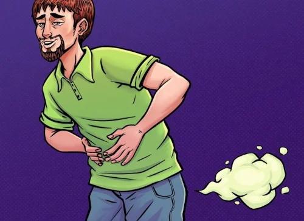
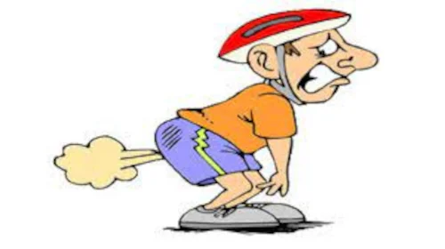
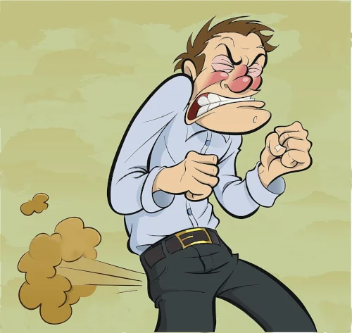

Top 10 Farts In Existence
Article Published 02/01/2022 4:20 PM EST
Farts are pretty great, but what if we could only choose 10?
10. Whoopee Cushion

While not technically a fart, this children's toy is a classic for one reason: the noise is very funny. Slip one of these babies on the chair of your friend, teacher, or boss and watch their hilarious reaction. Only number 10 because it doesn't smell very bad.
9. Silent Farts
Farts are usually pretty great, but silent ones can be a party pooper (pun intended). While some may argue that the classic "silent but deadly" may save this category, we believe that the smell is generally not enought to justify the lack of that sweet sweet fard sound. Hence the lowest rank of the farts.
8. Queef

While not technically a fart, it does create a very funny sound that makes everyone in the room give a good chuckle. The only thing that keeps it from ranking higher is the fact that queefs can only be performed by women.
7. Squeaky Fart
Squeaky farts, while much quiter than queefs, are very funny. Especially gut-busting when punctuating a long silence, these lovely braps will never fail to make anyone in the room laugh. However, this fart is usually not that stinky, losing it points.
6. Wet Fart

Now we're getting in to the good shit (pun definitely intended again)! The sound of this fart is iconic, being recognized by anyone who hears it. While generally not the longest, the wet fart will certainly cause the room to erupt in laughter upon its passing. All in all, a solid fart.
5. Stinky Fart

Stinky farts can come in all varieties, making them a solid choice for any occaision. They can be loud or quiet, long or short, and wet or dry. This makes them a rather versatile type of fart, however an inconsistent one. Still, this fart will make anyone in the room pee their pants laughing.
4. Loud Fart

Now we're talking! This fart may be quick, but it also echoes throughout wherever you may be when you let this one rip! This allows for more laughter, however the generally short length may leave your friends wanting more. This may seem bad, however following it with the next fart on this list will certainly satiate their appetite for fards.
3. Long Fart

What can I say? Long farts are a classic, with their long braaappp sound, as well as generally being some of the stinkiest, most vile farts in existence. Release one of these puppies at the right time, and all of your friends will be rolling for days.
2. Shart
The perfect combination of wet fart, loud fart, and shid, this fart is one of the best you could possibly have go through your rear. Plus, you're left with One of the smelliest of all farts, usually requiring one to wash their pants afterwards. However, use this one at a party or other gathering and you'll steal the spotlight for sure!
1. Among Fard

It's important to note that Reds commit nearly 52% of all the fards in Among Us, which is astounding when you take into consideration the fact that they make up 12-13% of the population. It gets even more astounding when you start considering the fact the bulk of Reds committing these fards are probably ages 8-18 which is probably around an estimated 6-7% of the population that means that around 7% of Among Us Players are committing around 50% of the fards.